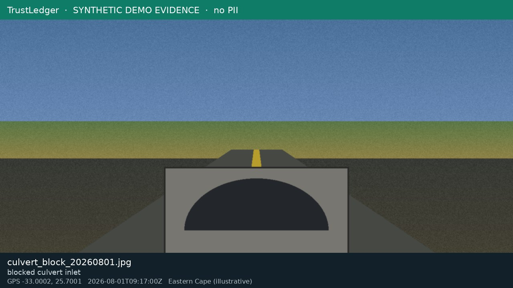

INC-302 · Road washed-out over culvert
SITE-014 · R72 Bridge 3 - West · High · Open · 2026-08-02T14:30:00Z
Reported by USER-PUB-01 (mock). Linked asset ASSET-210 · WO-075 due 2026-08-10.

Evidence EVID-0099 · GPS -33.0002, 25.7001 · 2026-08-01T09:17:00Z
Inspection INSP-1001 score 72 · drainage partial_blocked
Ledger hashes for this trail are resolved at export time from ledger_entries.csv
(search entity_id INSP-1001, EVID-0099, INC-302, WO-075). Signature verification uses
keys/ledger_ed25519_public.pem.
{{ledger_chain}}